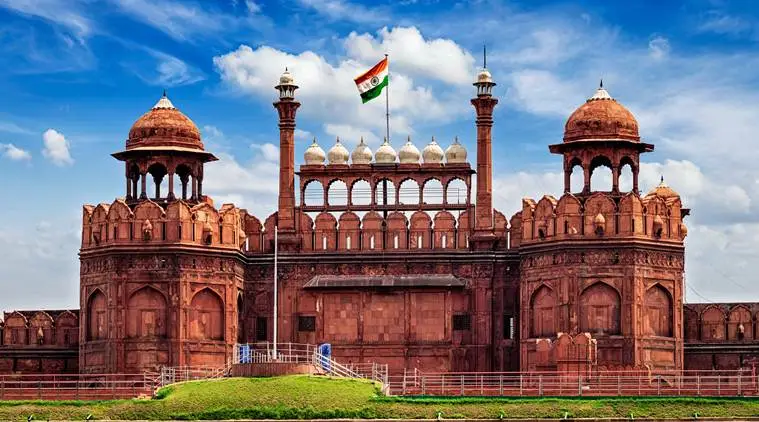

Discovering the Heart of India: Delhi
Introduction
Delhi, the capital city of India, is a captivating blend of history, culture, and modernity. From ancient monuments to bustling bazaars, and from serene gardens to vibrant street food, Delhi offers a diverse range of experiences. Join me as we embark on a journey through the heart of India, exploring the city's rich heritage and vibrant culture.
Day 1: Historical Marvels
Red Fort
Start your Delhi adventure at the iconic Red Fort, a UNESCO World Heritage Site. Built by the Mughal Emperor Shah Jahan, this grand fort stands as a testament to India's rich history. Don't miss the evening sound and light show that brings the fort's history to life.
Jama Masjid
Just a short walk from the Red Fort is Jama Masjid, one of the largest mosques in India. Climb the minaret for a stunning panoramic view of Old Delhi. The mosque's impressive architecture and serene ambiance make it a must-visit.
Lunch at Karim's
For a taste of authentic Mughlai cuisine, head to Karim's, located near Jama Masjid. Established in 1913, this legendary eatery is famous for its kebabs, biryanis, and mouth-watering curries.
Day 2: Cultural and spiritual insights
Qutub Minar
Begin your day with a visit to Qutub Minar, another UNESCO World Heritage Site. This towering minaret, built in the 12th century, is surrounded by intricate carvings and historical ruins, including the Iron Pillar of Delhi.
Lotus Temple
Next, head to the Lotus Temple, a stunning Bahá'í House of Worship. Shaped like a lotus flower, this architectural marvel offers a peaceful environment for meditation and reflection, regardless of your faith.

Lunch at Saravana Bhavan
For a delightful South Indian meal, visit Saravana Bhavan in Connaught Place. Enjoy a variety of dosas, idlis, and other traditional dishes in this popular vegetarian restaurant..
Day 3: Exploring New Delhi
India Gate
Start your day at India Gate, a war memorial dedicated to Indian soldiers. The surrounding lawns are perfect for a morning stroll. Visit the nearby National War Memorial for more insights into India's military history.
Humayan's Tomb
Next, visit Humayun's Tomb, a UNESCO World Heritage Site and a precursor to the Taj Mahal. The beautiful gardens and intricate Mughal architecture make it a serene spot for photography and relaxation.
Lunch at Khan Market
Head to Khan Market for lunch, an upscale shopping area with numerous cafes and restaurants. Perch Wine & Coffee Bar is a great choice for a relaxing meal.
Day 4: Modern Delhi and Shopping
Akshardham Temple
Begin your day with a visit to the stunning Akshardham Temple. This modern architectural wonder showcases traditional Indian art, culture, and spirituality through its intricate carvings, exhibitions, and the mesmerizing musical fountain show.
Shopping at Dilli haat
Spend your afternoon at Dilli Haat, an open-air market that offers a variety of handicrafts, textiles, and cuisines from different states of India. It's a perfect place to buy souvenirs and experience the diversity of Indian culture.
Dinner at Indian Accent
Conclude your Delhi journey with a memorable dinner at Indian Accent, one of the city's finest restaurants. Located in The Lodhi hotel, Indian Accent offers innovative Indian cuisine that blends traditional flavors with contemporary techniques.
Conclusion
Delhi is a city that seamlessly blends the old with the new, offering a unique travel experience filled with historical landmarks, cultural treasures, and modern attractions. Whether you're exploring ancient forts, indulging in delicious street food, or shopping in vibrant markets, Delhi promises an unforgettable journey through time and culture. Happy travels!
Comments